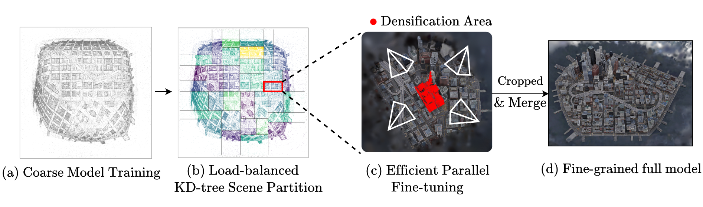

Visual Comparisons
Ours
3D Gaussian Splatting (3DGS) has established itself as an efficient representation for real-time, high-fidelity 3D scene reconstruction. However, scaling 3DGS to large and unbounded scenes such as city blocks remains difficult. Existing divide-and-conquer methods alleviate memory pressure by partitioning the scene into blocks and training on multiple, non-communicating GPUs, but introduce new bottlenecks: (i) partitions suffer from severe load imbalance since uniform or heuristic splits do not reflect actual computational demands, and (ii) coarse-to-fine pipelines fail to exploit the coarse stage efficiently, often reloading the entire model and incurring high overhead.
In this work, we introduce LoBE-GS, a novel Load-Balanced and Efficient 3D Gaussian Splatting framework that re-engineers the large-scale 3DGS pipeline. Specifically, LoBE-GS introduces a load-balanced KD-tree scene partitioning scheme with optimized cutlines that balance per-block camera counts. To accelerate preprocessing, it employs depth-based back-projection for fast camera assignment, reducing processing time from hours to minutes. It further reduces training cost through two lightweight techniques: visibility cropping and selective densification.
On large-scale urban and outdoor datasets, LoBE-GS reduces scene-partitioning time by up to an order of magnitude and the worst-block fine-training time by up to 3× relative to CityGaussian, yielding up to 9.1× faster end-to-end training than prior partition-based methods while maintaining competitive reconstruction quality. LoBE-GS provides a communication-free alternative with favorable quality–efficiency trade-offs under matched GPU budgets.

Overview of the LoBE-GS pipeline. We first train a coarse 3DGS model, then perform load-balanced KD-tree partitioning with fast camera selection (FCS), which splits the scene into blocks and efficiently assigns high-coverage cameras to each block using reusable depth-based 3D cues. Each split is further refined via cutline refinement (CR) to balance the workload across blocks. Before and during parallel fine-tuning, visibility cropping (VC) and selective densification (SD) reduce per-block optimization cost while preserving reconstruction quality. Finally, we prune Gaussians outside each block and merge all blocks into a unified, high-quality model.
Setup. We evaluate on six large-scale scenes: Building and Rubble from Mill19, Residence and Sci-Art from UrbanScene3D, and the synthetic MatrixCity-BigCity and MatrixCity-SmallCity. We compare against state-of-the-art large-scale 3DGS methods — CityGaussian, VastGaussian, and Grendel-GS — as well as a strong 3DGS† baseline. Reconstruction quality is measured with PSNR, SSIM, and LPIPS (no post-hoc color correction), and efficiency by end-to-end wall-clock training time under a fixed GPU budget TE2E(K). All experiments run on a single node with 8× NVIDIA L40 GPUs.
End-to-end wall-clock training time under an 8-GPU budget (shorter is better). Among partition-based methods, LoBE-GS is consistently the fastest.
Up to 9.1× faster end-to-end than CityGaussian, at competitive quality.
MatrixCity-BigCity is roughly 20× longer to train than the other scenes and is plotted on its own axis; bar heights are comparable within each panel, not across panels.
| Method | MatrixCity-BigCity | MatrixCity-SmallCity | Building | |||||||||||||||
|---|---|---|---|---|---|---|---|---|---|---|---|---|---|---|---|---|---|---|
| PSNR | SSIM | LPIPS | TE2E | Mpeak | #GS | PSNR | SSIM | LPIPS | TE2E | Mpeak | #GS | PSNR | SSIM | LPIPS | TE2E | Mpeak | #GS | |
| Single-model / distributed methods | ||||||||||||||||||
| 3DGS† | 22.64 | 0.660 | 0.454 | 24:29 | 16.53 | 10.5 | 25.57 | 0.794 | 0.315 | 02:10 | 17.06 | 11.3 | 20.46 | 0.720 | 0.305 | 01:30 | 9.94 | 6.2 |
| Grendel-GS | 23.01 | 0.740 | 0.354 | 10:46 | 21.86 | 68.1 | 26.96 | 0.850 | 0.224 | 02:05 | 10.99 | 20.8 | 22.52 | 0.764 | 0.277 | 00:46 | 8.18 | 6.9 |
| Partition-based methods | ||||||||||||||||||
| VastGS | 29.17 | 0.889 | 0.173 | 57:29 | 20.10 | 196.5 | 26.92 | 0.845 | 0.235 | 04:31 | 11.71 | 19.1 | 21.31 | 0.743 | 0.277 | 02:28 | 6.73 | 10.5 |
| CityGS | 27.87 | 0.838 | 0.265 | 140:31 | 17.20 | 58.4 | 27.46 | 0.865 | 0.204 | 06:53 | 14.11 | 23.6 | 21.55 | 0.778 | 0.246 | 04:51 | 20.39 | 13.2 |
| LoBE-GS (Ours) | 28.88 | 0.888 | 0.170 | 15:27 | 11.50 | 197.6 | 27.69 | 0.875 | 0.185 | 02:08 | 7.42 | 28.9 | 22.13 | 0.790 | 0.231 | 01:33 | 9.34 | 13.9 |
| Method | Rubble | Residence | Sci-Art | |||||||||||||||
|---|---|---|---|---|---|---|---|---|---|---|---|---|---|---|---|---|---|---|
| PSNR | SSIM | LPIPS | TE2E | Mpeak | #GS | PSNR | SSIM | LPIPS | TE2E | Mpeak | #GS | PSNR | SSIM | LPIPS | TE2E | Mpeak | #GS | |
| Single-model / distributed methods | ||||||||||||||||||
| 3DGS† | 25.47 | 0.777 | 0.277 | 01:10 | 5.84 | 3.7 | 21.44 | 0.791 | 0.236 | 01:22 | 6.63 | 4.1 | 21.34 | 0.833 | 0.232 | 00:48 | 3.64 | 2.1 |
| Grendel-GS | 25.72 | 0.768 | 0.301 | 00:30 | 5.90 | 3.2 | 22.37 | 0.804 | 0.227 | 00:43 | 10.99 | 4.8 | 22.76 | 0.847 | 0.222 | 00:33 | 11.20 | 2.0 |
| Partition-based methods | ||||||||||||||||||
| VastGS | 25.13 | 0.749 | 0.316 | 01:15 | 3.75 | 5.3 | 20.88 | 0.778 | 0.242 | 02:28 | 4.74 | 7.9 | 20.88 | 0.796 | 0.291 | 01:33 | 3.20 | 2.9 |
| CityGS | 25.77 | 0.813 | 0.228 | 03:33 | 14.56 | 9.7 | 22.00 | 0.813 | 0.211 | 06:11 | 21.66 | 10.8 | 21.39 | 0.837 | 0.230 | 02:52 | 14.04 | 3.7 |
| LoBE-GS (Ours) | 25.93 | 0.813 | 0.232 | 01:01 | 9.40 | 9.2 | 21.48 | 0.805 | 0.209 | 01:38 | 9.00 | 11.2 | 21.45 | 0.843 | 0.219 | 00:49 | 5.49 | 4.5 |
Table 1. Quantitative comparison on MatrixCity, Mill19, and UrbanScene3D under an 8-GPU
budget. We report PSNR, SSIM, LPIPS, end-to-end runtime TE2E(8)
(hh:mm), peak per-GPU memory Mpeak (GB), and final model size #GS (millions
of Gaussians).
best
second
third
reconstruction quality across all five methods.
bold
marks the best runtime among partition-based methods.
| Method | MatrixCity-SmallCity | Building | Rubble | Residence | Sci-Art | ||||||||||
|---|---|---|---|---|---|---|---|---|---|---|---|---|---|---|---|
| Tcoarse | Tpart | max Tfine | Tcoarse | Tpart | max Tfine | Tcoarse | Tpart | max Tfine | Tcoarse | Tpart | max Tfine | Tcoarse | Tpart | max Tfine | |
| VastGS | – | 00:48 | 01:13 | – | 00:05 | 00:44 | – | 00:04 | 00:39 | – | 00:08 | 00:49 | – | 00:20 | 00:31 |
| CityGS | 00:52 | 01:39 | 01:00 | 00:59 | 00:21 | 01:06 | 01:06 | 00:09 | 01:14 | 00:43 | 00:31 | 01:22 | 00:42 | 00:08 | 00:45 |
| LoBE-GS (Ours) | 00:38 | 00:08 | 00:27 | 00:25 | 00:02 | 00:28 | 00:23 | 00:01 | 00:25 | 00:26 | 00:03 | 00:26 | 00:16 | 00:02 | 00:20 |
Table 2. Runtime breakdown for partition-based methods (hh:mm): coarse-stage time Tcoarse, partitioning time Tpart, and the slowest fine-stage block max Tfine (the straggler / load-balancing metric). “–” = stage not used by that method.